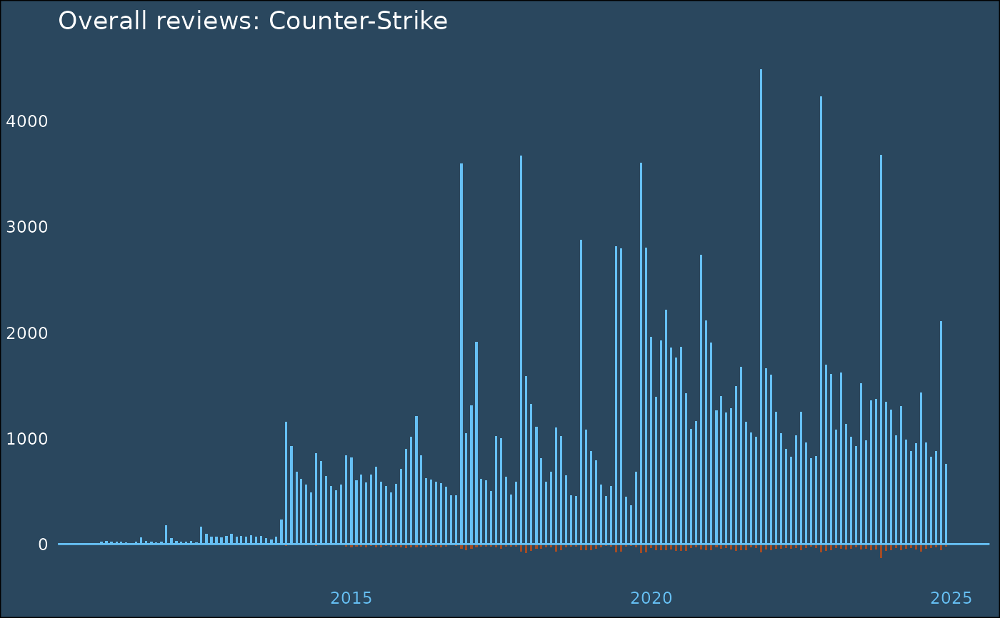

stf_app_reviews.RdRetrieve user reviews for a given Steam application.
get_app_reviews retrieves up to 100 reviews.
get_all_app_reviews has the ability to return much more reviews
depending on input parameters.
stf_app_reviews(
appid,
day_range = NULL,
start_date = NULL,
end_date = NULL,
date_range_type = "all",
filter = "recent",
language = "all",
review_type = "all",
purchase_type = "steam",
playtime = c(0, 0),
filter_offtopic_activity = TRUE,
paginate = FALSE,
max_pages = 10,
num_per_page = 20,
cursor = NULL
)
wba_app_review(steamid, appid)
stf_review_histogram(appid, language = "english", review_score_preference = 2)Application ID referencing a Steam application. There are generally two ways of retrieving an appID:
Inspect or parse the store URL of an application, e.g. https://store.steampowered.com/app/10/CounterStrike/
Query appIDs programmatically, e.g. using search_apps
Number of days from now to n days ago to look for
reviews, e.g. day_range = 5 looks for reviews in the last 5 days.
Date-time object describing the earliest time to look for
reviews. Ignored if date_range_type = "all".
Date-time object describing the latest time to look for
reviews. Ignored if date_range_type = "all".
Specifies what to do with reviews within the
date range set by start_date and end_date. Options include
include, exclude, and all. If all, ignores
end_date and start_date.
Specifies the sort order. Can be one of summary,
recent, updated, and all. summary returns
a summary of 10 most helpful comments. all sorts by helpfulness
and applies moving windows in order to always return reviews (see the Steam
blog article).
recent sorts by creation time and updated sorts by update time.
For get_all_app_reviews, filter must be either updated or
recent.
Which review language to include in the output. A full
list of platform supported languages can be found in the
Steamworks documentation.
Defaults to "all", which removes the language filter.
Filters by the type of review. Can be either
positive, negative, or all.
Filters by the type of purchase. Can be either
steam, non_steam_purchase, or all.
Length-2 numeric vector specifying the minimum and maximum
playtime in hours that the reviewer should have played the game. If
0, no required (minimum or maximum) play time is set.
Whether to filter offtopic activity. This especially includes so-called "review bombs", i.e. many reviews written by users in a very short time to artificially alter the review score of a game. See the Steam blog entry for more information.
If TRUE, paginates through the results. Some methods
provide data access in digestible chunks and do not return all available
information at once. The paginate automatically retrieves all pages
until max_pages is reached.
Maximum number of pages to paginate. Ignored if
paginate is FALSE. Defaults to Inf such that all
available data are paginated.
By default, Steam only shows 20 reviews per query.
By setting num_per_page, this number can go up to a maximum of 100.
For larger queries, consider iterating using get_all_app_reviews.
For each review page query, get_app_reviews returns a
cursor ID. This ID can be used to paginate and iterate through many review pages
at once. This argument is probably useless for most use cases and is
extensively used for iteration purposes by get_all_app_reviews.
SteamID of a user. The SteamID must be in a format that can
be converted by convert_steamid. This includes vanity,
Steam64, Steam2, and Steam3 IDs.
Unknown. In my tests, changing this argument did not yield a measurable difference in the results.
stf_app_reviews and wba_app_review return a dataframe
containing IDs, texts, and metadata of application reviews on Steam. See the
community docs
for more info on the output of stf_app_reviews.
stf_review_histogram returns a named list containing rollups aggregated
by month (rollups), and rollups of the last 30 days aggregated by
day (recent). Each list element is a dataframe containing the
corresponding date and the aggregated thumps up/down.
The functions of this reference page do not need any kind of authentication to be used (Key = API key needed, Login = user login needed).
| Function | Key | Login | Note |
stf_app_reviews | no | no | |
wba_app_review | no | yes | Can only retrieve reviews of the authenticated user |
stf_review_histogram | no | no |
# reviews of counter-strike
stf_app_reviews(10)
#> # A tibble: 20 × 21
#> recommendationid language review timestamp_created timestamp_updated
#> <chr> <chr> <chr> <dttm> <dttm>
#> 1 182527201 english "I still … 2024-12-11 22:35:26 2024-12-11 22:35:26
#> 2 182524914 turkish "güzel pi… 2024-12-11 21:54:43 2024-12-11 21:54:43
#> 3 182523668 latam "Nada mej… 2024-12-11 21:33:10 2024-12-11 21:33:10
#> 4 182523418 english "h" 2024-12-11 21:28:38 2024-12-11 21:28:38
#> 5 182523143 latam "Un clasi… 2024-12-11 21:23:15 2024-12-11 21:23:15
#> 6 182521345 brazilian "bom" 2024-12-11 20:52:51 2024-12-11 20:52:51
#> 7 182521229 ukrainian " CS-2 NO… 2024-12-11 20:50:37 2024-12-11 20:50:37
#> 8 182518440 spanish "asd" 2024-12-11 20:04:46 2024-12-11 20:04:46
#> 9 182517524 english "I think … 2024-12-11 19:49:45 2024-12-11 19:49:45
#> 10 182513147 turkish "seks" 2024-12-11 18:42:46 2024-12-11 18:42:46
#> 11 182511992 latam "Hola, qu… 2024-12-11 18:24:26 2024-12-11 18:24:26
#> 12 182508919 russian "Классная… 2024-12-11 17:36:12 2024-12-11 17:36:12
#> 13 182507966 russian "[h2]Разд… 2024-12-11 17:20:45 2024-12-11 17:21:49
#> 14 182506619 russian "Классика… 2024-12-11 16:59:22 2024-12-11 16:59:22
#> 15 182504120 russian "имба игр… 2024-12-11 16:21:30 2024-12-11 16:21:30
#> 16 182499449 turkish "Enemy Sp… 2024-12-11 15:09:41 2024-12-11 15:09:41
#> 17 182499138 brazilian "b1 e b2" 2024-12-11 15:04:27 2024-12-11 15:04:27
#> 18 182497664 brazilian "Counter … 2024-12-11 14:40:54 2024-12-11 14:40:54
#> 19 182491972 schinese "好玩" 2024-12-11 13:01:45 2024-12-11 13:01:45
#> 20 182489087 russian "лучше че… 2024-12-11 12:10:46 2024-12-11 12:10:46
#> # ℹ 16 more variables: voted_up <lgl>, votes_up <int>, votes_funny <int>,
#> # weighted_vote_score <dbl>, comment_count <int>, steam_purchase <lgl>,
#> # received_for_free <lgl>, written_during_early_access <lgl>,
#> # primarily_steam_deck <lgl>, author.steamid <chr>,
#> # author.num_games_owned <int>, author.num_reviews <int>,
#> # author.playtime_forever <int>, author.playtime_last_two_weeks <int>,
#> # author.playtime_at_review <int>, author.last_played <dttm>
# get all negative german reviews
stf_app_reviews(
10,
language = "german",
review_type = "negative",
paginate = TRUE,
max_pages = Inf
)
#> # A tibble: 44 × 21
#> recommendationid language review timestamp_created timestamp_updated
#> <chr> <chr> <chr> <dttm> <dttm>
#> 1 170113218 german "crasht we… 2024-07-17 21:18:21 2024-07-17 21:18:21
#> 2 131167004 german "I can't s… 2023-01-19 20:40:47 2023-03-06 20:00:48
#> 3 111335072 german "كنت أرغب … 2022-03-01 22:21:07 2022-03-01 22:21:07
#> 4 97061181 german "das spiel… 2021-08-06 18:25:54 2021-08-06 18:25:54
#> 5 96281113 german "Nicht mei… 2021-07-24 08:27:59 2021-07-24 08:27:59
#> 6 81452533 german "имба" 2020-12-02 09:27:08 2023-09-22 20:05:24
#> 7 79601831 german "keine lus… 2020-11-21 12:08:06 2020-11-21 12:08:06
#> 8 78492970 german "To much c… 2020-10-31 23:37:44 2020-10-31 23:37:44
#> 9 67832956 german "Trash Gam… 2020-04-22 18:57:46 2020-04-22 18:57:46
#> 10 64920573 german "gaaaaaaaa… 2020-03-12 16:18:01 2020-03-12 16:18:01
#> # ℹ 34 more rows
#> # ℹ 16 more variables: voted_up <lgl>, votes_up <int>, votes_funny <int>,
#> # weighted_vote_score <dbl>, comment_count <int>, steam_purchase <lgl>,
#> # received_for_free <lgl>, written_during_early_access <lgl>,
#> # primarily_steam_deck <lgl>, author.steamid <chr>,
#> # author.num_games_owned <int>, author.num_reviews <int>,
#> # author.playtime_forever <int>, author.playtime_last_two_weeks <int>, …
# get all recent reviews up to page 10
stf_app_reviews(10, filter = "recent", max_pages = 10)
#> # A tibble: 20 × 21
#> recommendationid language review timestamp_created timestamp_updated
#> <chr> <chr> <chr> <dttm> <dttm>
#> 1 182527201 english "I still … 2024-12-11 22:35:26 2024-12-11 22:35:26
#> 2 182524914 turkish "güzel pi… 2024-12-11 21:54:43 2024-12-11 21:54:43
#> 3 182523668 latam "Nada mej… 2024-12-11 21:33:10 2024-12-11 21:33:10
#> 4 182523418 english "h" 2024-12-11 21:28:38 2024-12-11 21:28:38
#> 5 182523143 latam "Un clasi… 2024-12-11 21:23:15 2024-12-11 21:23:15
#> 6 182521345 brazilian "bom" 2024-12-11 20:52:51 2024-12-11 20:52:51
#> 7 182521229 ukrainian " CS-2 NO… 2024-12-11 20:50:37 2024-12-11 20:50:37
#> 8 182518440 spanish "asd" 2024-12-11 20:04:46 2024-12-11 20:04:46
#> 9 182517524 english "I think … 2024-12-11 19:49:45 2024-12-11 19:49:45
#> 10 182513147 turkish "seks" 2024-12-11 18:42:46 2024-12-11 18:42:46
#> 11 182511992 latam "Hola, qu… 2024-12-11 18:24:26 2024-12-11 18:24:26
#> 12 182508919 russian "Классная… 2024-12-11 17:36:12 2024-12-11 17:36:12
#> 13 182507966 russian "[h2]Разд… 2024-12-11 17:20:45 2024-12-11 17:21:49
#> 14 182506619 russian "Классика… 2024-12-11 16:59:22 2024-12-11 16:59:22
#> 15 182504120 russian "имба игр… 2024-12-11 16:21:30 2024-12-11 16:21:30
#> 16 182499449 turkish "Enemy Sp… 2024-12-11 15:09:41 2024-12-11 15:09:41
#> 17 182499138 brazilian "b1 e b2" 2024-12-11 15:04:27 2024-12-11 15:04:27
#> 18 182497664 brazilian "Counter … 2024-12-11 14:40:54 2024-12-11 14:40:54
#> 19 182491972 schinese "好玩" 2024-12-11 13:01:45 2024-12-11 13:01:45
#> 20 182489087 russian "лучше че… 2024-12-11 12:10:46 2024-12-11 12:10:46
#> # ℹ 16 more variables: voted_up <lgl>, votes_up <int>, votes_funny <int>,
#> # weighted_vote_score <dbl>, comment_count <int>, steam_purchase <lgl>,
#> # received_for_free <lgl>, written_during_early_access <lgl>,
#> # primarily_steam_deck <lgl>, author.steamid <chr>,
#> # author.num_games_owned <int>, author.num_reviews <int>,
#> # author.playtime_forever <int>, author.playtime_last_two_weeks <int>,
#> # author.playtime_at_review <int>, author.last_played <dttm>
(hist <- stf_review_histogram(10)$rollups)
#> # A tibble: 170 × 3
#> date recommendations_up recommendations_down
#> <dttm> <int> <int>
#> 1 2010-11-01 00:00:00 25 0
#> 2 2010-12-01 00:00:00 33 1
#> 3 2011-01-01 00:00:00 26 0
#> 4 2011-02-01 00:00:00 21 0
#> 5 2011-03-01 00:00:00 26 1
#> 6 2011-04-01 00:00:00 15 0
#> 7 2011-05-01 00:00:00 8 0
#> 8 2011-06-01 00:00:00 22 0
#> 9 2011-07-01 00:00:00 66 0
#> 10 2011-08-01 00:00:00 32 1
#> # ℹ 160 more rows
if (requireNamespace("ggplot2", quietly = TRUE)) {
library(ggplot2)
ggplot(hist) +
geom_bar(
aes(x = date, y = recommendations_up),
stat = "identity",
fill = "#66c0f4",
color = NA,
width = resolution(as.double(hist$date) * 0.5)
) +
geom_bar(
aes(x = date, y = recommendations_down * - 1),
stat = "identity",
fill = "#a34c25",
color = NA,
width = resolution(as.double(hist$date) * 0.5)
) +
geom_hline(yintercept = 0, color = "#66c0f4") +
labs(title = "Overall reviews: Counter-Strike", x = NULL, y = NULL) +
theme_minimal() +
theme(
plot.background = element_rect(fill = "#2a475e"),
text = element_text(color = "white"),
panel.grid = element_blank(),
axis.line = element_blank(),
axis.text.y = element_text(color = "white"),
axis.text.x = element_text(color = "#66c0f4")
)
}
